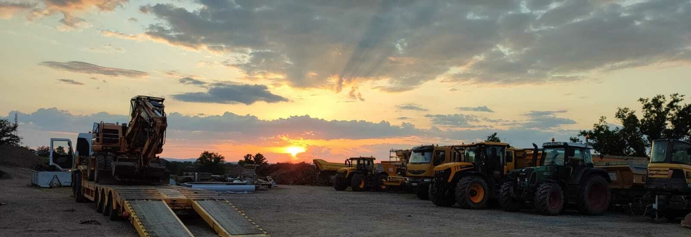
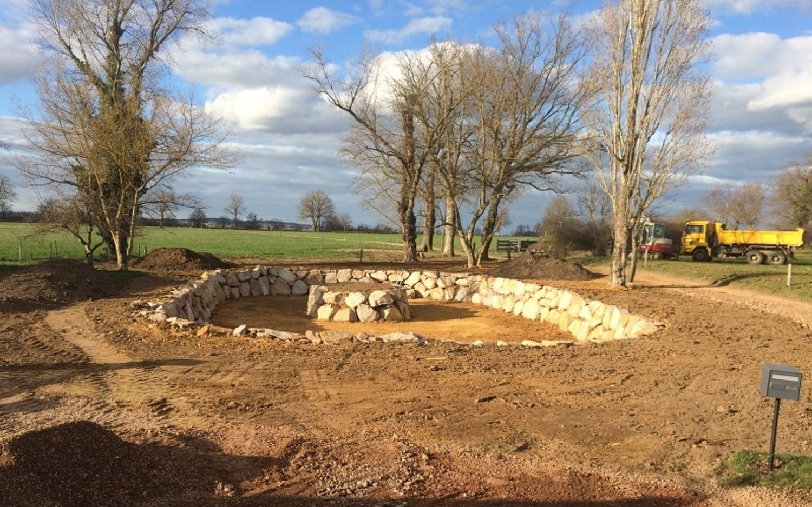

Terrassement, démolition, VRD, assainissement individuel, aménagements extérieurs, transport de marchandise et travaux forestiers. À Saint-Hilaire-sous-Charlieu, pour les particuliers comme pour les professionnels, dans un rayon de 50 km.
Un chantier de travaux publics se chiffre sur place, pas sur un écran. En revanche, savoir quels moyens il demande, combien de matériaux il déplace et ce qu'il faut avoir sous la main avant d'appeler, ça se prépare en deux minutes. Le récapitulatif part ensuite directement dans le formulaire de contact.
Saint-Hilaire-sous-Charlieu, Nandax et les communes limitrophes sont à moins de 15 km des dépôts.
Une estimation suffit : l'objectif est de donner un ordre de grandeur avant la visite sur site.
Valeurs indicatives usuelles, pré-remplies selon le matériau choisi. Elles servent à donner un ordre de grandeur, pas à établir un devis : la nature réelle du terrain se constate sur place.
Il se complète au fur et à mesure de vos réponses.
Commencez par indiquer le type de travaux : les prestations concernées et les moyens correspondants s'affichent ici.
Les volumes et les rotations affichés sont des ordres de grandeur calculés à partir des hypothèses ci-contre et des charges utiles réelles du parc MONNET. Ils ne valent pas devis.
Située à Saint-Hilaire-sous-Charlieu, MONNET TP est spécialisée dans les travaux de terrassement, démolition, aménagements extérieurs, assainissement individuel et collectif, VRD, enrobé, transports de marchandises et concassage mobile, que vous soyez particuliers ou professionnels.
Accessibilité, superficie, tonnage : la société MONNET est équipée pour répondre à tous types de chantiers. Toutes les pelles de terrassement sont équipées de brise-roche, et l'entreprise est titulaire de la capacité de transport de marchandises depuis 2018.
La gestion technique et logistique des chantiers s'organise depuis deux dépôts, l'un à Saint-Hilaire-sous-Charlieu, l'autre à Nandax. La zone d'intervention couvre un rayon de 50 km, du Roannais jusqu'au Brionnais et au plateau de Thizy.
Communes citées par l'entreprise sur son site actuel. La liste complète reste à compléter avec elle.
MONNET Travaux Publics et Transports est créée en 1998 à Saint-Hilaire-sous-Charlieu. En 2014, l'entreprise s'agrandit pour devenir la SAS MONNET Travaux Publics ; cette expansion s'accompagne de l'acquisition d'un second dépôt, à Nandax.
Dirigée par Christian Monnet, elle compte aujourd'hui dix collaborateurs. Le siège de Saint-Hilaire-sous-Charlieu assure l'accueil et la gestion administrative ; la conduite technique des chantiers s'organise depuis les deux dépôts.

L'accueil physique au siège se fait sur rendez-vous.